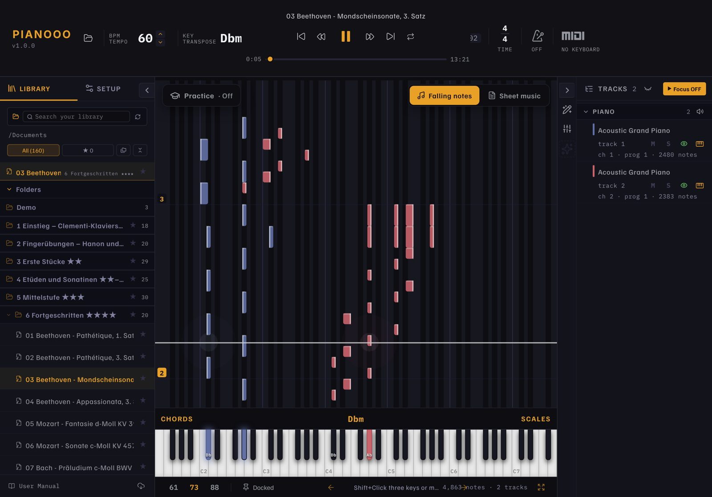
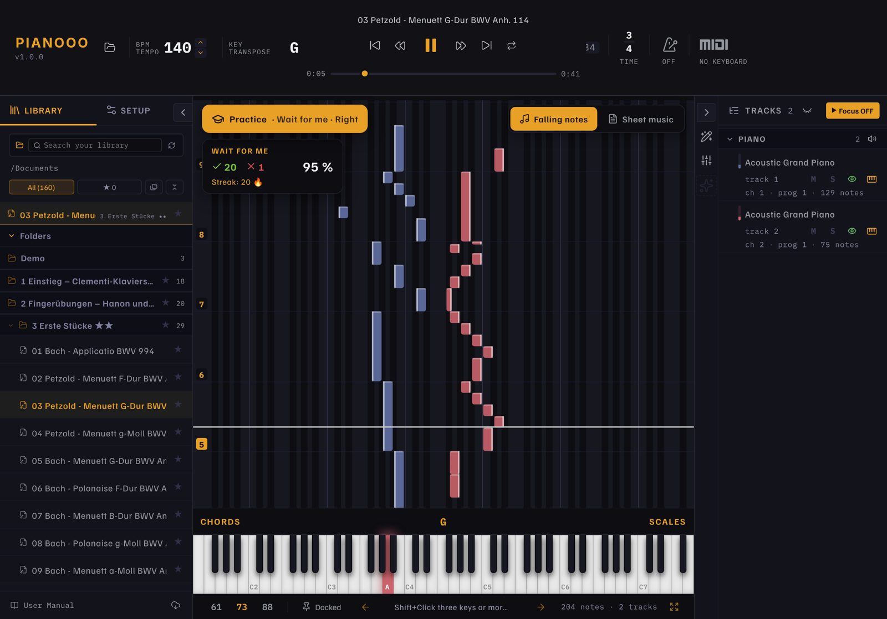
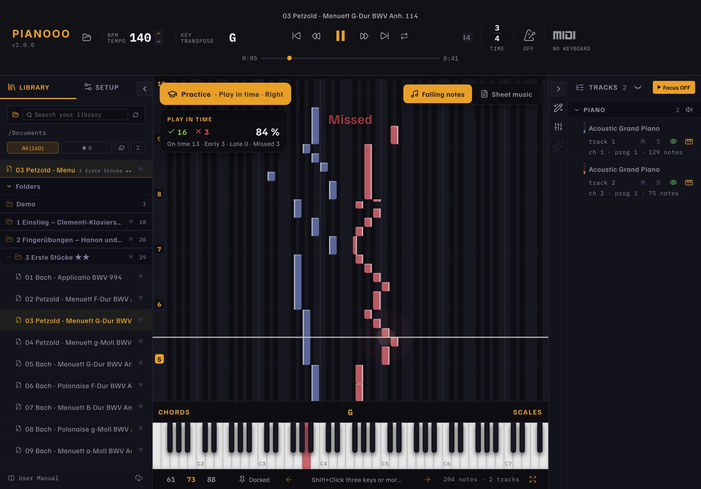
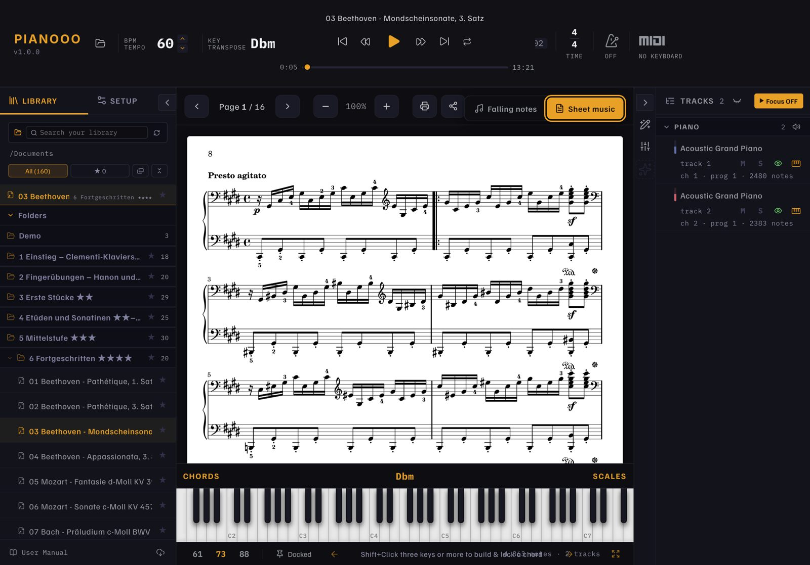
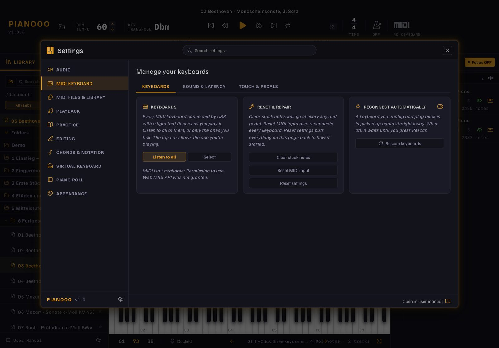

Learn piano with falling notes or real sheet music. The notes wait until you hit the right key, or you play along in tempo and get faster with every pass. Connect your digital piano over Bluetooth MIDI and start with 157 classical pieces. Free and open source.
iPadOS 15 or later · macOS 12 or later · installed by sideloading, see below

Pianooo listens to your keyboard. Choose how you want to practise, which hand you play, and let the app play the rest.


Practise one hand while the app plays the other hand and the other instruments.
Start at 50 % tempo. After every pass with at least 90 % right, the tempo goes up by 5 %, until you play at full speed.
Set a loop around a difficult passage and repeat it until it sits. Each pass gets its own score.
Switch with one tap. Each view fills the whole screen. Print sheet music on A4 or share it.
Connect a Kawai, Yamaha, Roland or any MIDI keyboard. Your keys light up on screen, with velocity and pedal.
Seven levels, from Clementi, Hanon and Czerny to Bach, Beethoven, Chopin, Debussy and Joplin. Each with MIDI and sheet music.
Open MIDI, MusicXML or Guitar Pro files from Safari, Files or AirDrop. Put a PDF with the same name next to it to see its score.
Hands are shown in their own colors. Practice one hand while the app plays the other.
Tempo, transpose, loop, metronome, chord detection, mixer and a note editor.
Optional free piano sounds to download, including a Kawai concert grand and a Yamaha grand.
English, German, French and Spanish. The app starts in your system language.


Pianooo.ipa and drag it into Sideloadly with your iPad connected.Step by step: SIDELOADING.md
Paste this into Terminal. It downloads the app, installs it in Applications and starts it:
cd ~/Downloads && curl -L -o Pianooo-Mac.zip https://github.com/HOAI-droid/Pianooo/releases/download/ipad-latest/Pianooo-Mac.zip && rm -rf /Applications/Pianooo.app && ditto -x -k Pianooo-Mac.zip /Applications && xattr -cr /Applications/Pianooo.app && open /Applications/Pianooo.app
Pianooo is built on Orfeo by SquareBow, an open-source piano learning app for Windows. Pianooo brings it to iPad and Mac and adds Bluetooth MIDI, sheet music and a starter catalog.
Pianooo is an independent project, not an official Orfeo release. Many thanks to SquareBow for the original.